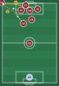
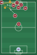
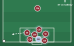
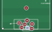

In possession
Cross it into the six-yard box for our runners at the near post, the centre and the far post.
Pass it along the ground to a player waiting on the edge of the box to shoot.
Designated players take turns, and they know who they are. In-swinging or out-swinging: whatever suits the taker. There's no signal, so the taker picks the routine and everyone reads it.


Counter-attack: one centre back always stays back.
Out of possession


We defend corners zonally. Guard your zone, not a player. If the ball comes into your zone, it's yours: attack it and clear it.